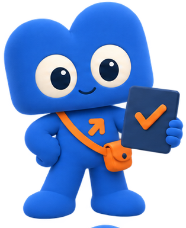
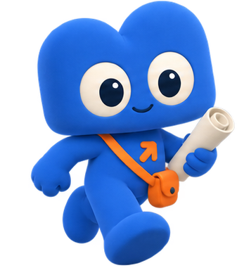

VPS, akses SSH, dan VS Code Server untuk satu lingkungan kerja yang selalu siap.
Course: Build & Publish with AI
Private Thematics · Modul 1 · 90 menit
Yuk, belajar bareng Noo!
Teman belajar. Partner berkarya.
1Siapkan markasnya, mulai karyamu.
Build Today. Go Online Tomorrow.
| Menit | Kegiatan |
|---|---|
| 0–10 | Kenalan VPS dan remote development |
| 10–25 | Masuk SSH dan amankan server |
| 25–45 | Pasang code-server |
| 45–60 | Konfigurasi dan akses browser |
| 60–80 | Praktik mandiri |
| 80–90 | Challenge dan refleksi |
Ini misi kita.
Siap mulai?

| Selama ini | Mulai sekarang |
|---|---|
| Kode di laptop | Kode di VPS |
| Nyala saat laptop nyala | Nyala sepanjang hari |
| Hanya kamu yang bisa buka | Bisa dibuka dari mana saja |
| Ganti device, setup ulang | Ganti device, buka browser |
| Siap dipakai sendiri | Siap dipublikasikan |
Seluruh modul berikutnya memakai VPS yang kamu siapkan hari ini.
Simpan IP, nama user, dan password di tempat yang aman.
Domain dan publikasi dibahas pada Modul 5 sampai 7.
Fondasinya dulu.
Sisanya menyusul.
Laptop ikut mati saat ditutup. Server tidak.
Publikasi butuh alamat yang bisa dihubungi kapan saja.
Spesifikasi kecil sudah cukup untuk modul ini. Satu vCPU dengan 1 GB RAM mampu menjalankan code-server.
# pola perintahnya ssh <user>@<ip-server> # contoh ssh root@203.0.113.10
203.0.113.10 hanya contoh. Pakai IP milikmu sendiri, dan jangan membagikan password server di grup kelas.
$ ssh root@203.0.113.10 # pertama kali tersambung Are you sure you want to continue connecting? yes # prompt berubah = kamu sudah di server root@noodu-vps:~#
Prompt berubah menjadi nama server, bukan nama laptop.
Setiap perintah yang diketik dijalankan di server.
Koneksi terputus itu wajar. Ulangi perintah ssh; pekerjaan yang sudah tersimpan tidak ikut hilang.
apt update && apt upgrade -y adduser noodu usermod -aG sudo noodu su - noodu
Root menjalankan apa pun tanpa konfirmasi.
Satu salah ketik dapat merusak seluruh server.
User biasa memaksamu sadar setiap kali menulis sudo.
| Bagian | Letaknya |
|---|---|
| Editor | Berjalan di VPS |
| File project | Tersimpan di VPS |
| Terminal | Terminal VPS |
| Extension | Terpasang di VPS |
| Tampilan | Browser di laptopmu |
Ganti laptop, buka browser, semua sudah pada tempatnya.
Tidak ada lagi alasan “di laptop saya jalan, kok”.
curl -fsSL https://code-server.dev/install.sh | sh code-server --version
Baca output sampai selesai. Baris “code-server has been installed” menandakan instalasi berhasil.
sudo systemctl enable --now code-server@$USER systemctl status code-server@$USER
active (running) berarti editor sudah berjalan.
failed berarti ada konfigurasi yang perlu diperiksa.
enable membuat service ikut menyala saat server dinyalakan ulang. --now menjalankannya sekarang juga.
bind-addr: 0.0.0.0:8080 auth: password password: ganti-dengan-punyamu
Jalankan systemctl restart setelah mengubah file ini. Tanpa restart, konfigurasi lama masih dipakai.
| Baris | Artinya |
|---|---|
| bind-addr | Alamat dan port yang didengarkan |
| 0.0.0.0 | Menerima akses dari luar server |
| 8080 | Nomor port code-server |
| auth | Cara masuk ke editor |
| password | Kunci yang kamu pakai sendiri |
http://203.0.113.10:8080 # bukan ini, karena localhost # menunjuk ke laptopmu sendiri http://localhost:8080
Port 8080 mungkin masih tertutup firewall server.
Itu pembahasan Modul 4: Understanding Port.
Untuk sekarang, pastikan service sudah active.
Editornya hidup.
Sekarang di browsermu.
sudo apt install -y git curl unzip git config --global user.name "Nama Kamu" git config --global user.email "email@kamu"
Pasang yang dibutuhkan saja. Menambah paket nanti jauh lebih mudah daripada membersihkan server yang sudah penuh.
~/projects ├── latihan/ ├── final-project/ └── CATATAN.md
Tulis IP, nama user, dan port di catatanmu.
Ketiganya dipakai lagi mulai modul berikutnya.
Siapkan terminalmu.
Kita jalan bareng.
Isi E01–E06 pada CHECKLIST-ENV.csv.
Tulis hasil aktual, status, dan buktinya.
Jika gagal, catat pesan error apa adanya.
Sekarang giliranmu
menyiapkan markasnya.
bind-addr: 127.0.0.1:8080 auth: password password: rahasia123
127.0.0.1 hanya menerima koneksi dari dalam server itu sendiri. Browser di laptopmu datang dari luar, sehingga permintaannya ditolak sebelum sampai ke editor. Ganti menjadi 0.0.0.0, restart service, lalu coba buka kembali.
Coba cari penyebabnya
sebelum buka jawaban.
| Gejala | Yang diperiksa |
|---|---|
| SSH ditolak | IP, nama user, dan password server |
| Perintah code-server tidak dikenal | Instalasi selesai tanpa pesan error? |
| Status service failed | journalctl -u code-server@$USER |
| Browser tidak merespons | Nilai bind-addr dan firewall port 8080 |
| Password selalu ditolak | Service sudah di-restart setelah diubah? |
Baca pesan error sampai habis sebelum mengulang instalasi. Membangun ulang server jarang menyelesaikan masalah konfigurasi.
Apa beda 127.0.0.1 dengan 0.0.0.0?
Kenapa kita tidak bekerja sebagai root?
Bagaimana membuktikan editor tetap hidup setelah server restart?
Buktikan lewat demo,
lalu jelaskan caranya.

Berikutnya kita memasang Antigravity CLI, mengenal konsep vibe coding, dan menaruh AI di dalam alur kerja harian.
VPS yang berjalan, editor yang bisa dibuka dari browser, dan catatan kredensialmu.
Environment → Vibe Coding → Run → Port → Cloudflare → Domain → Publish → Exam → Final Project.
Rujukan: VPS · SSH · code-server · systemd
Markasnya sudah siap.
Lanjut ke AI!